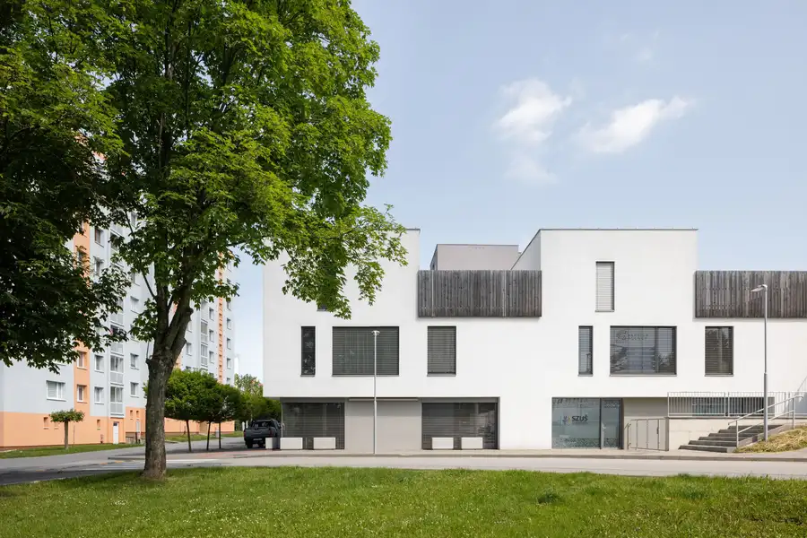
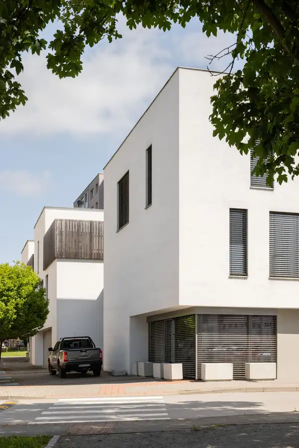
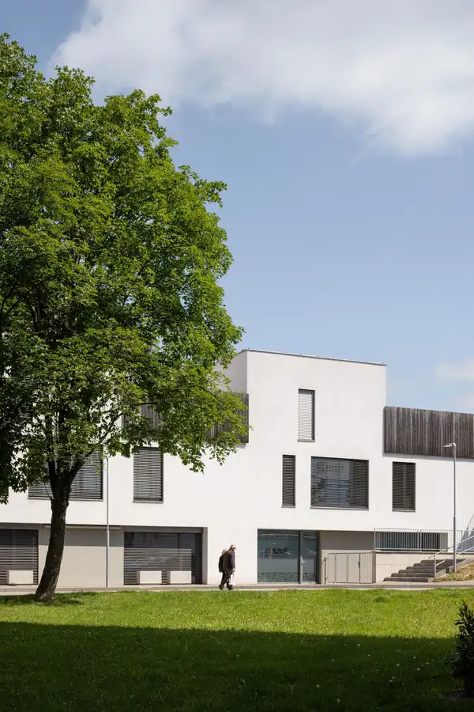
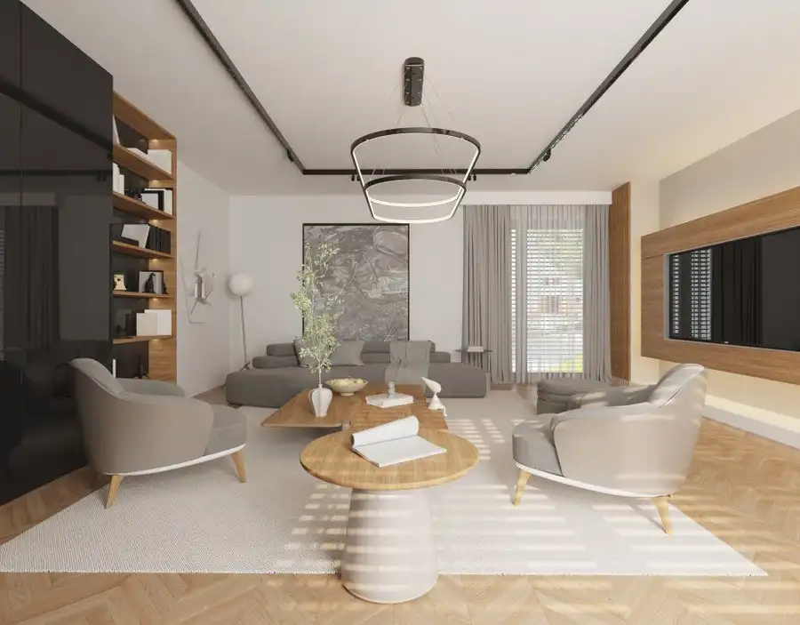
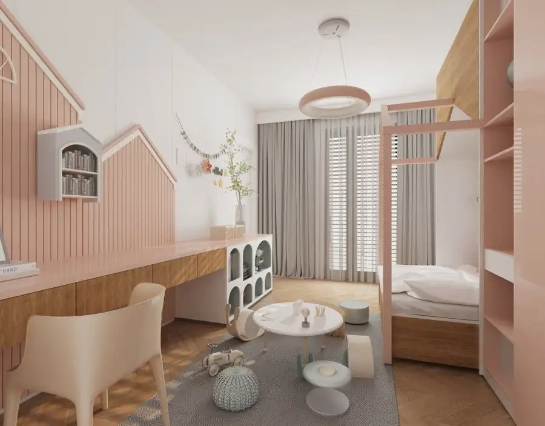
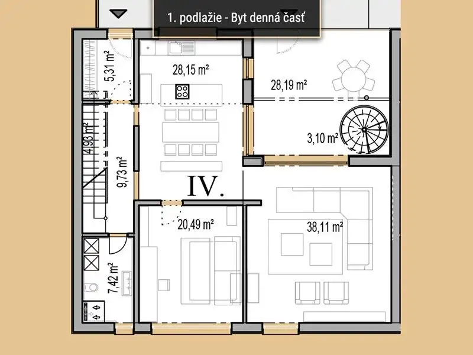

Posledná príležitosť bývať v Átriu pod Kamenicou
Stropkov






- Plocha178 m²
- StavNovostavba
- VlastníctvoOsobné
- Energetická triedaA
O nehnuteľnosti
5-izbový mezonet s 178 m², veľkorysými terasami a vlastnou garážou priamo v centre Stropkova.Takmer celý projekt už má svojich majiteľov. Toto je posledná voľná bytová jednotka v Átriu pod Kamenicou.Ak hľadáte priestor a komfort rodinného domu, no zároveň nechcete bývať mimo mesta, práve ste našli kombináciu, ktorá sa objavuje len zriedka.Ponúkame na predaj 5-izbový mezonet s podlahovou plochou 178 m², ktorý ponúka veľkorysý priestor pre rodinný život, prácu aj oddych. K tomu patria rozsiahle terasy, vlastná garáž a pivničná kobka – a to všetko priamo v centre Stropkova.Domový komfort. Mestské pohodlie.Predstavte si bývanie, v ktorom má každý člen rodiny dostatok priestoru. Ráno si vychutnáte kávu na terase, deti majú svoje vlastné izby, počas dňa môžete nerušene pracovať v pracovni a večer sa celá rodina stretne v priestrannej dennej časti.Mezonet je rozdelený na dve podlažia tak, aby prirodzene oddeľoval dennú a nočnú časť bývania.178 m² priestoru pre životPrízemie – denná časť:veľkorysá obývacia izba – 28,19 m²priestranná kuchyňa s jedálňou – 28,11 m²pracovňachodbasamostatné WCPoschodie – nočná časť:3 samostatné izby využiteľné ako spálne, detské izby či pracovňa2 samostatné kúpeľne s WCDispozícia je navrhnutá tak, aby poskytla priestor aj súkromie – presne to, čo rodina potrebuje pri každodennom bývaní.Terasy, ktoré rozširujú váš domovK mezonetu patria priestranné terasy na oboch podlažiach s celkovou výmerou 67,50 m².Nie je to len „ďalších pár metrov. Je to priestor na letné raňajky, rodinné posedenia, grilovanie, oddych po práci alebo vlastnú zelenú oázu uprostred mesta.Moderné bývanie bez kompromisovÁtrium pod Kamenicou bolo navrhnuté s dôrazom na komfort, kvalitu a energetickú efektívnosť.Súčasťou vybavenia sú:-A-čkový energetický štandard-podlahové vykurovanie-exteriérové žalúzie-veľké francúzske okná s dostatkom prirodzeného svetla-príprava na klimatizáciu-nové rozvody elektriny, vody a kúrenia-vlastná garáž-pivničná kobkaBývajte v centre. Nie mimo neho.Jednou z najväčších výhod je poloha.Nemusíte si vyberať medzi pokojným a priestranným bývaním a komfortom mesta.Všetko potrebné máte na dosah – obchody, služby, reštaurácie, kaviarne, športoviská, detské ihriská aj možnosti oddychu.Auto máte vo vlastnej garáži a každodenné vybavovanie môžete mať doslova na pár minút od domu.A ešte jeden detail, ktorý mení hodnotu tejto ponukyToto nie je jedna z viacerých dostupných jednotiek.Projekt Átrium pod Kamenicou je takmer celý predaný.Tento mezonet je posledná bytová jednotka, ktorá v projekte zostala.Ak teda hľadáte veľkorysé rodinné bývanie v centre Stropkova, ďalšia rovnaká príležitosť už v tomto projekte nebude.Skolaudované. Pripravené na váš nový život.Žiadne čakanie na dokončenie projektu.Átrium pod Kamenicou je skolaudované a pripravené na svojich nových majiteľov.Ak vás toto bývanie zaujalo, odporúčame si ho prísť pozrieť osobne. Pri nehnuteľnosti s takýmto priestorom, terasami a dispozíciou fotografie jednoducho nepovedia všetko.Dohodnite si osobnú obhliadku a príďte sa presvedčiť, či je toto váš nový domov.0910 964 114zak@rhc.skwww.podkamenicou.sk
Parametre
- Druh
- Rodinný dom
- Dátum zverejnenia
- 25. 03. 2025
- Energetický certifikát budovy
- A
- Plocha pozemku
- 0 m²
- Počet izieb / miestností
- 5
- Počet nadzemných podlaží
- 2
- Rok výstavby
- 2019
- Stav nehnuteľnosti
- Novostavba
- Terén pozemku
- Rovinatý
- Typ
- Predaj
- Typ konštrukcie
- Tehlová, Železobetónová
- Vlastníctvo
- Osobné
- Zastavaná plocha
- 178 m²
- Úžitková plocha
- 178 m²